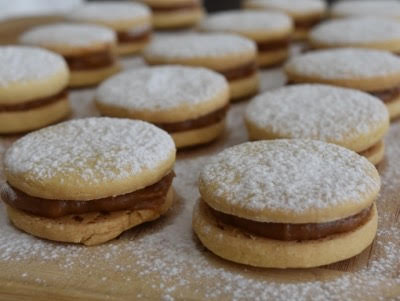
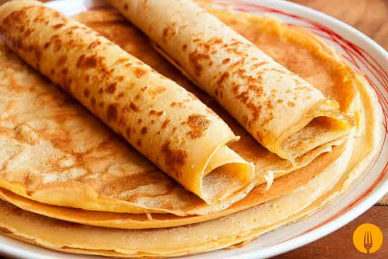
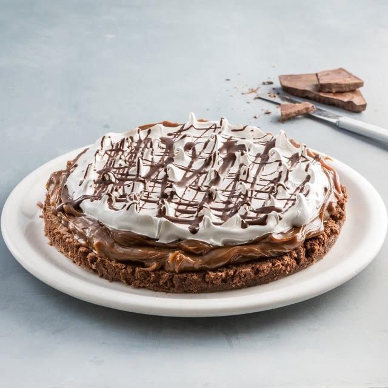
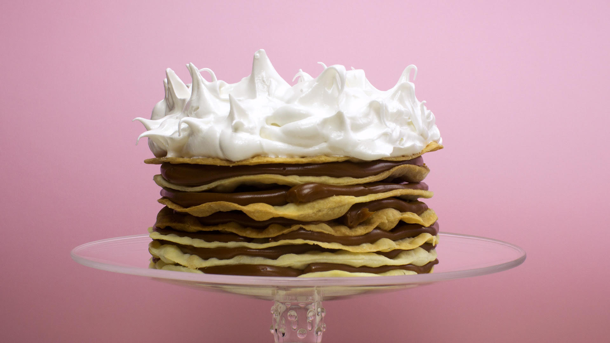

Alfajorcitos
Esta receta es especial para un té con amigos o familia, con estos alfajorcitos vas a sorprender a todos.
Ingredientes
- 240 g de harina
- 1 pizca de sal
- 100 g de azúcar impalpable
- 170 g de manteca
- 1 huevo
- 250 g de dulce de leche dulce de leche clásico
Preparación
- Tamizar la harina con la sal y el azúcar impalpable.
- Agregar la manteca fría y hacer un arenado.
- Incorporar el huevo y unir hasta obtener una masa tierna.
- Cubrir con papel film y llevar a la heladera durante 30 minutos.
- Estirar sobre una superficie enharinada y cortar discos de 4 cm de diámetro.
- Disponer en placas limpias y cocinar en el horno precalentado, a temperatura moderada, durante 8 minutos.
- Dejar enfriar y unir de a dos las tapitas con abundante dulce de leche.
Panqueques con dulce de leche
Los panqueques con dulce de leche son una muy buena opcion para un rico postre.
Ingredientes
- 2 huevos
- 1 tazas de leche
- 1 taza de harina
- manteca, cantidad necesaria
Preparación
- Batimos los huevos.
- Incorporamos la leche y seguimos batiendo.
- Agregamos la harina y batimos con batidora eléctrica por unos 5 minutos.
- Ponemos una sartén a fuego medio y añadimos una cucharada de manteca.
- Vertemos unas dos cucharadas de la mezcla sobre la sartén (debemos lograr una capa que cubra toda la superficie de la misma).
- Cocinamos por dos minutos y luego damos vuelta el panqueque y cocinamos otros dos minutos o hasta que el panqueque esté de color dorado.
- Finalmente le agrgamos el dulce de leche y disfrutamos.
Chocotorta
La torta mas facil de hacer es sin duda la chocotorta, no necesita horno ni mucha habilidad para cocinar.

Ingredientes
- 400 grs de dulce de leche.
- 150 grs de crema.
- 500 cc de leche.
- 1 pote chico de queso crema. Puede ser Casancrem o Mendicrim. Son los 2 quesos crema más recomendados para este postre
- 3 paquetes de chocolinas.
Preparación
- Busque un bowl y coloque el contenido del pote pequeño de queso crema ( 400 grs aprox) junto con 400 grs de dulce de leche. Batir la mezcla hasta unir ambos ingredientes formando una nueva crema.
- Tome los 3 paquetes de chocolinas y remoje en leche. La leche puede ser reemplazada por café si desea.
- Coloque una capa de chocolinas en la base del recipiente de vidrio. Luego cubrir con la crema que obtuvo al mezclar el dulce de leche con el queso crema. Y a la heladera.
- Retire la chocotorta de la heladera luego de 1 hora y a comer!!
Marquise
Una mezcla de todo lo dulce, brownie, dulce de leche y merengue, que mas rico que esta bomba!
Ingredientes
- 400 g de manteca
- 300 g de chocolate
- 2 tazas de azúcar
- 8 huevos
- 2 cdas de harina
- 500 g de dulce de leche
- 200 g de crema de leche
- Para el merengue italiano
- 400 g de azúcar
- 200 g de claras de huevo
- 150 cc de agua
Preparación
- Disolver a baño María el chocolate junto con la manteca y el azúcar.
- Retirar, añadirle los huevos ligeramente batidos y, por último, la harina.
- Enmantecar y enharinar un molde de 28 cm de diámetro; volcar la preparación y llevar a horno moderado hasta que comiencen a despegarse los bordes.
- Retirar, dejar enfriar y desmoldar, cuidando después de pasar un cuchillo por todo el contorno.
- Reservar.
- Para el merengue, poner a batir las claras y, por otro lado, hacer un almíbar con el azúcar y el agua.
- Cuando llegue a punto bolita fuerte, volcar en forma de hilo sobre las claras.
- Seguir batiendo hasta que el bol se enfríe y el merengue esté firme y brilloso.
- Para el armado final cubrir la torta con una capa bien generosa de dulce de leche, una finita con la crema batida sin azúcar y terminar con el merengue italiano en forma de picos.
Rogel
La mejor torta para algun evento especial que encanta a todos.
Ingredientes
- 250 gr. de crema
- 250 gr. de harina 0000
- 4 huevos
- 800 gr. de dulce de leche repostero
- 80 cc. de agua
- 240 gr. de azúcar
Preparación
- Mezclar la harina con la sal y la crema. Amasar hasta estar homogénea.
- Dividir la masa en 8 0 9 bollitos. Estirar con un palote un bollito a la vez y cortar con el molde.
- Colocar en la plata , pinchar con tenedor y llevar al horno medio hasta que se dore, aproximadamente 10 minutos.
- Hacer este proceso con cada bollito.
- Una vez que estén todas las tapas cocinadas, armar el Rogel con una manga de dulce de leche.
- Intercalar las tapas de masa con dulce de leche extendiendolo bien sobre toda la superficie.
- Por otro lado hacer un merengue Italiano.
- Llevar a hervor el agua con el azúcar hasta que llegue a una temperatura de 118 grados, al mismo tiempo que empieza a hervir poner a batir las claras a punto nieve.
- Una vez que está listo el caramelo, bajar la velocidad de la batidora y volcar el caramelo en forma de hilo sobre las claras batidas.
- Seguir batiendo hasta que el merengue baje de temperatura.
- Cuado ya este frio, agregarlo a las tapas con dulce de leche y decorar como mas guste